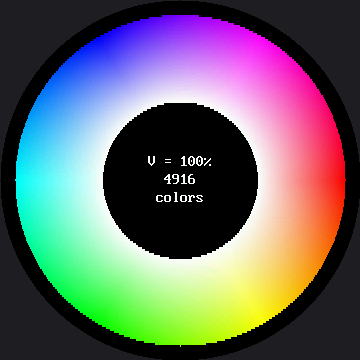

The Color Wheel¶
Every color this display can make, arranged in one circle. This is a demo more than an exercise — there is nothing to fill in — but it earns its lab number, because it is the kit's best worked example of measuring before you optimize.
It is also the one program in the kit whose shape and the screen's shape are the same shape. A color wheel is a circle: hue is an angle, and an angle has no beginning or end, which is exactly why red appears at both "ends" of a rainbow. On the OLED kit this demo could not have existed at all — not for want of color, but because a rectangle is the wrong container for the idea. The 1.2" smartwatch kit runs the same demo on a smaller circle, and — as you're about to see — this bigger circle doesn't just make the picture larger. It changes one of the two surprises hiding in this lab.
The one demo my screen was made for
 Round screen, round idea. Run it once and look at it before you read another word — this is the prettiest thing in the kit and it has two surprises hiding in it.
Round screen, round idea. Run it once and look at it before you read another word — this is the prettiest thing in the kit and it has two surprises hiding in it.
How a Color Gets Its Place¶
| Axis | Maps to | Meaning |
|---|---|---|
| Angle around the ring | Hue | Which color it is |
| Distance from center | Saturation | How much of that color |
| Button A | Value | How bright, in three steps |
Those three axes are called HSV, and they are how people describe color. The display does not
think that way at all — it wants red, green, and blue amounts. hsv_to_rgb() is the translator
between the two, and writing that translator is most of what this program does.
Here's the wheel at full brightness:

Surprise One: This Wheel Is a Slice¶
Color here has three dimensions, and a screen has two. Every color wheel you have ever seen is one flat cut through a solid, at a single brightness. Press button A to move the cut and a whole new sheet of colors appears.
Surprise Two: Having Room for Every Color Isn't the Same as Using It¶
On the 1.2" kit, this section was an impossibility proof: its visible circle is only 240 pixels across, about 45,239 pixels in all, and there is no way to fit 65,536 possible colors into fewer than 65,536 places. Showing every RGB565 color at once on that kit wasn't just hard. It was arithmetically impossible.
That argument does not survive the trip to this screen. The visible circle here is 360 pixels across and holds about 101,788 pixels — and even the narrower ring this program actually paints holds about 66,700. Both numbers are bigger than 65,536. For the first time, there is room:
| 1.2" kit (240×240) | This kit (360×360) | |
|---|---|---|
| Visible circle | 45,239 px | 101,788 px |
| This wheel's ring | ~29,692 px | ~66,700 px |
| RGB565 total colors | 65,536 | 65,536 |
| Room for every color? | No — the ring is smaller than the color count | Yes — the ring is now bigger than the color count |
So the question stops being arithmetic and becomes a real one: is a color wheel actually using that room? You can see the answer for this particular run baked right into the screenshot above — the simulator's render found 4,916 distinct colors at V = 100%. Nobody has confirmed that number on real GC9B72 glass yet, so treat it as a well-informed rendering rather than a hardware measurement, and let your own board have the final word when you run it.
Whatever the exact count turns out to be on your board, it will be far short of 65,536 — and the reason is worth working out rather than taking on faith. Hue only varies with angle and saturation only with radius, so the wheel is a two-dimensional sheet cut through a three-dimensional color space, and it samples that sheet unevenly: thousands of pixels near the inner edge sit at low saturation, where a whole neighborhood of angles rounds down to nearly the same washed-out RGB565 value.
And the count drops as you dim the wheel, for a reason worth understanding: scaling a channel down before the encoder truncates its low bits makes more values collapse onto each other. Dim colors are coarser colors — true on any RGB565 screen, this one included.
Where the Time Goes¶
The demo prints a full timing report every time you run it — start, end, drawing, counting, rate, microseconds per pixel — to the Thonny shell. Nobody has timed this program on a GC9B72 board yet, so read that report yourself; that is the entire point of the demo existing.
A FAST flag switches between two drawing functions that produce the same wheel: one written to be
read, one written to be quick. Here is what those same two functions measured on the smartwatch
kit's smaller GC9A01 panel, with 29,692 pixels in its ring:
FAST on the smartwatch kit |
Time | Per pixel |
|---|---|---|
False — written to be read |
18.3 s | 616 µs |
True — written to be quick |
2.2 s | 74 µs |
Do not expect those figures here. This kit has a different display controller, a driver written from scratch for it, and about 66,700 pixels in its ring instead of 29,692. Nobody has run the comparison on a GC9B72 yet — that measurement is yours to make, and the flag is right there in the file waiting for you to flip it.
What does carry over is the shape of the answer, because it comes out of the code, not the panel. Two changes separated the fast version from the readable one on the smartwatch kit:
- Exactly 4× — computing one color per 2×2 block instead of per pixel, a quarter as many
atan2andsqrtcalls. That is arithmetic, not a measurement, so it is 4× on any board, this one included. - About 2.1× on the smartwatch kit, unmeasured here — inlining two function calls and binding globals to local names. No change at all to what gets computed, only to how the interpreter reaches it.
That second number is the lesson worth keeping, whatever size it turns out to be here. On the kit where it was measured, roughly half the cost of the original loop was never arithmetic at all — it was MicroPython's overhead for calling a function and looking up a global name, paid tens of thousands of times over.
This Program Has the Opposite Bottleneck
 Every other program in this kit is limited by the wire. This one is limited by math — an
Every other program in this kit is limited by the wire. This one is limited by math — an atan2, a sqrt, and an HSV conversion for every pixel, on a chip with no floating-point unit. Same hardware, opposite bottleneck, and the only reason you can tell them apart is that both measured themselves.
Why the Math Is Slow: the RP2040 Has No FPU¶
Every atan2, sqrt, and float multiply is emulated in software — that is a fact about the RP2040
itself, and it is exactly as true on this kit as on the smartwatch kit, because both boards use the
same chip. It is why the usual "batch your drawing calls" instinct does not fix this program by
itself: the readable version already batches its drawing into 486 blit_buffer() calls instead of
66,704 individual pixel calls — under 500 trips to the display for a wheel with over sixty-six
thousand pixels in it — and the arithmetic underneath those calls is still what takes the time.
If you optimized the wire without measuring, you would be optimizing the wrong thing. That is the entire argument for the measuring step, in one program.
Two Dead Ends Kept in the File¶
Both are still in the source next to the working code, because they teach more than the successes. The numbers below are the smartwatch kit's own measurements, and the reasoning turns out not to improve on a bigger screen:
| Attempt | Reasoning | What happened |
|---|---|---|
Merge same-colored blocks into single fill_rect calls |
The demo's own measurement said 24,706 of the smartwatch kit's 29,692 pixels repeat a color already on screen | Display calls went up, from 324 to 6,359. The repeats are real but scattered, not adjacent — and a wider row on this kit has more neighbors that differ across it, not fewer, so the same idea would fail here too. |
blit_buffer(line * BLOCK, ...) to send a whole strip at once |
Works fine in CPython | TypeError on the board — MicroPython repeats a bytes with * but not a bytearray. Nothing about a new display driver changes that; it is a language fact, not a panel fact. |
That second one is worth remembering as a general warning: check-labs.py cannot catch it, because
the difference only exists on the real interpreter.
Read the Report, Not the Clock in Your Head
 Guess where the time goes before you look at the shell — drawing, or counting the colors? Write your guess down. Being wrong here is the most useful thing that can happen to you in this lab.
Guess where the time goes before you look at the shell — drawing, or counting the colors? Write your guess down. Being wrong here is the most useful thing that can happen to you in this lab.
Things to Try¶
- Guess the distinct-color count before you run it. This screen makes the guess harder than the smartwatch kit did: the ring holds about 66,700 pixels and RGB565 has only 65,536 colors total, so "very nearly all of them" is at least arithmetically possible here in a way it never was on the smaller kit. Run it, compare your guess to what lands on the shell, then guess again for the dimmest brightness and see whether you predicted the direction correctly.
- Flip
FASTtoFalseand time both versions with a watch on your own board. Nobody has written those numbers down for this kit yet — when you get them, you will know something this page does not. - Change
BLOCKfrom 2 to 4. Four times fewer color computations. Where does the wheel start looking blocky, and is that trade worth it on a screen this size? - Widen the ring by lowering
INNER_R. The middle of a wheel is where saturation is near zero and every hue collapses to the same gray — which is why the hole is there in the first place.
References¶
- Color and Bits — the RGB565 encoding this wheel is exploring the limits of
- How Fast Is a Face? — the other optimization lab, with the opposite bottleneck
- Design Your Own Emotion — where picking a color becomes a design decision with consequences
- The Color Wheel on the 1.2" kit — the same lab on the smaller 240×240 kit, where showing every color at once was still arithmetically impossible